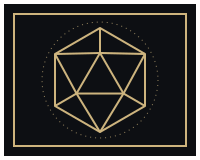
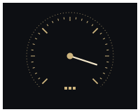

A play class from an urban legend
Stealth Wizard
A Stealth Wizard is a play class that no one can spot by looks.


This is a play.
This is an entertainment space, separate from the operator's academic work. It is not science.
This site is for fun. Its subject is the urban legend that "if you are still a virgin at thirty, you become a wizard."
The "laws" here are not scientific laws. They are not medical or psychological claims either, and they judge no one's sexual experience.
Nor do they call any particular person a wizard.
This is an in-joke, and some people may find it offensive. Please keep that in mind.
Wizards are not treated as better than other people, or as chosen. It is not elitism.
The operator does not speak for wizards.
"Stealth Wizard" is a name that casts the wizard of the wizard-at-thirty legend as a class in a game.
That wizard cannot be told by looks. There is no staff and no hat, and the spells are "Let me double-check" and "I'll be heading off now."
A result melts into people's lives the moment it appears, and can no longer be seen from outside (Law 6). That is why the class is called stealth.
Magic is turning a negative into the positive on its opposite side and returning it to relationships no one can see (Book IV of the Principia).
Outside view: a person with an umbrella, just standing there.Wizard's view: faces turn, negatives pile up, and results melt into relationships.
Class sheet (a play)
Stealth Wizard
- Line
- Magic, stealth branch
- Class change
- At the switch (Definition 8). Thirty is only a rule of thumb, and the switch can come earlier (Law 5)
- Looks
- Like anyone else. To the outside view, just a person standing with an umbrella
- Spells
- "Let me double-check." "I'll be heading off now."
- Visible results
- 0 (always)
Skills (passive)
- Many FacesShows a different face in each sceneLaw 2
- ConservationA negative once shown never fades; it piles upLaw 3
- ReversalAs negatives pile up, the opposite face appears as positiveLaw 4
- ReturnResults melt into relationships the moment they appearLaw 6
- SecrecyWrites down no specificsLaw 9
- Long LifeLives long. Living long is hardLaw 10
StatusQuagmire: the brain won't stop (Law 8)
A class here is a game metaphor, like a job in a role-playing game. It does not sort people into groups, and it is not something to pin on anyone. It is not an advanced class, and it is no stronger or better than any other class.
Pages
- Canon The single text the play grew from, in English with the Japanese original. Nine definitions and ten laws.
- Principia The canon rebuilt in the style of a classical mathematics book. Book I holds the definitions and laws, Book II the laws as formulas, Book III the dynamics of relationships, Book IV what magic is, and Book V the ban on magic.
- Field Guide How the ten laws quietly show up in daily life.
- Playground A game on the relationships of 8 people: flip faces, store negatives, wait for the switch.
- FAQ Is it science? Who is a wizard? What happens on the thirtieth birthday?
- Disclaimers and disclosure What this site is not, who wrote what, and the licences.
- Rules The terms of use. The privacy policy, requests and contact, notes on legality, and legal handling of the design can be opened from the footer of every page.
The first line of the canon
The canon begins like this.
本稿は論文とは別のものであり、著者の主体的な直観によるものである。
In English: This piece is not a paper. It rests on the author's own intuition.
This site is not a paper either.
It takes the image of the wizard from that intuition and digs into it as a play.
A scholarly analysis of this urban legend exists separately (Disclaimers and disclosure, "The scholarly text").
Last updated: (change history).